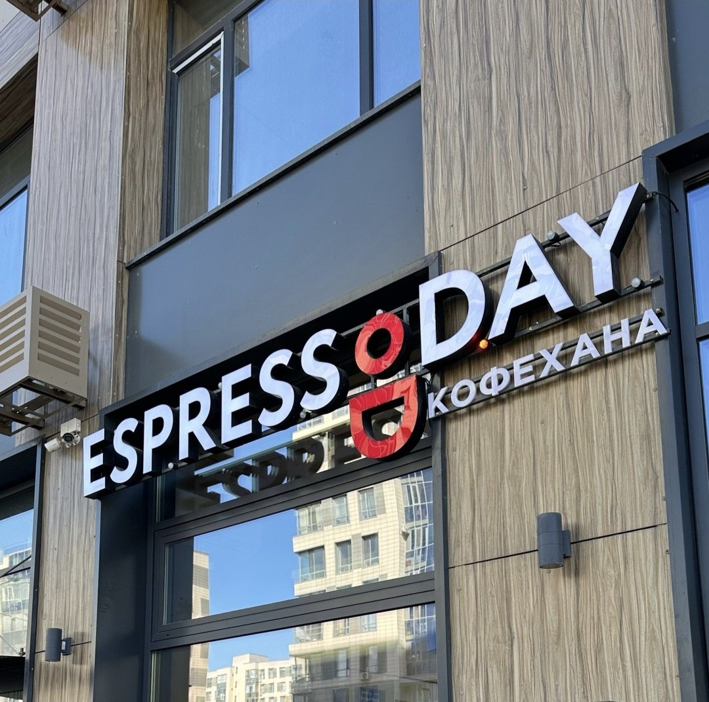

Espresso Day на Сыганак көшесі, 16
Ищете уютное место в Астане, где можно поработать или встретиться с друзьями в любое время суток? Загляните в Espresso Day на Сыганак, 16! Эта сеть, выросшая до сотни точек по всей стране всего за пару лет, стремится стать для своих гостей настоящим «вторым домом».
Здесь вас ждет не просто кофе, а целая палитра вкусов: от классических эспрессо-напитков до авторских лимонадов и сезонных коллекций вроде «Sabyt». Особый колорит меню придают названия на казахском языке, а для маленьких гостей предусмотрена линейка «бэйби дринкс». На этом сайте мы собрали для вас полное актуальное меню с ценами и удобную форму для заказа.
Espresso Day — была основана в 2023 году и за три года масштабировалась до сотни точек по всему Казахстану. Ассортимент сети выходит за пределы классики: в меню представлены авторские напитки, смузи, лимонады и сезонные новинки, доступные во всех филиалах.
Данный сайт включает четыре раздела: главную страницу, актуальное меню с ценами в тенге, форму для онлайн-заказа и отзывы гостей. Все данные о позициях и стоимости соответствуют текущему прайсу конкретного филиала.

Подробное меню со всеми ценами — на странице меню, а оформить заказ можно на странице заказа.